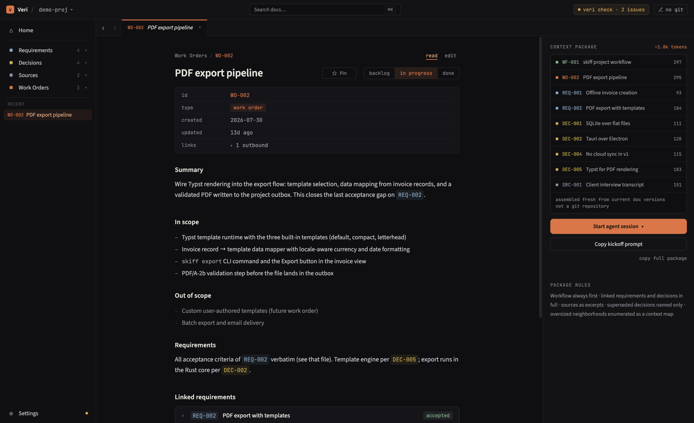
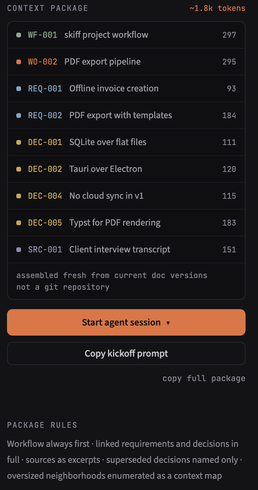
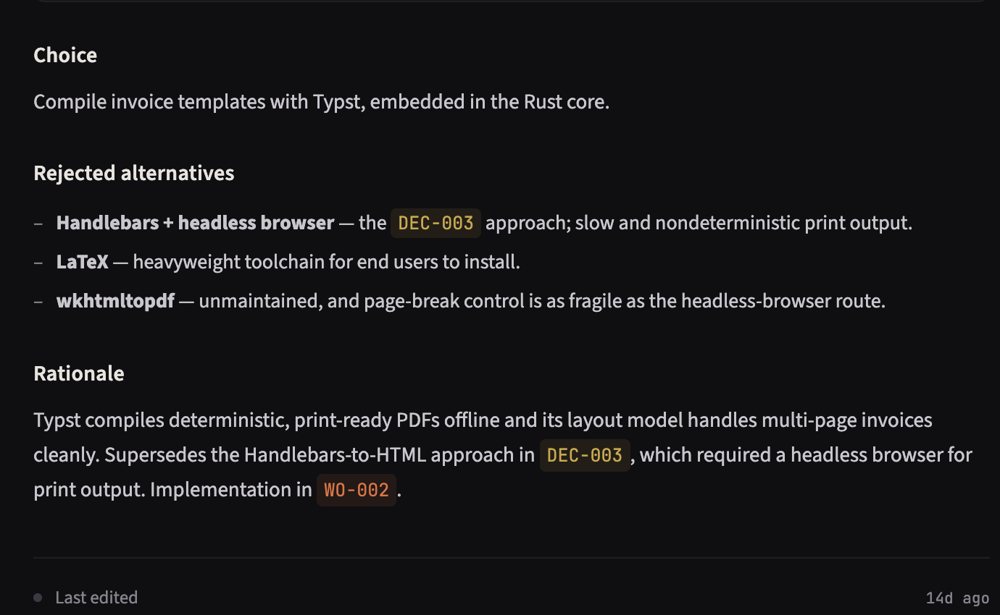
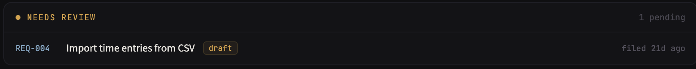
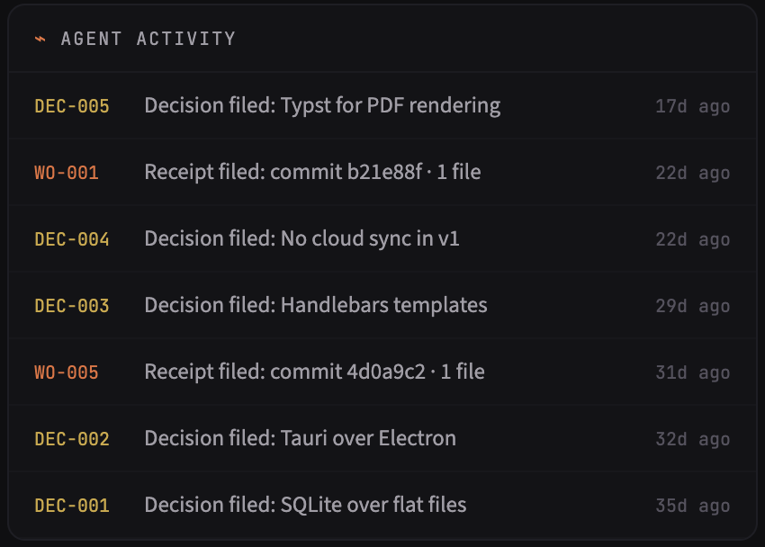
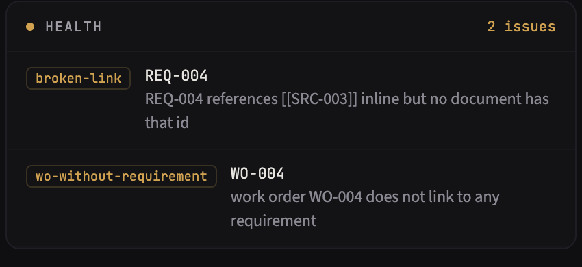

A knowledge base your coding agents read
Requirements, decisions, evidence, and work orders live as plain Markdown in your repo. Veri hands each coding task the context it needs — without rebuilding the project from chat history every session.

Your agent forgets what the project already knows
Coding agents can implement almost anything — but every new session starts with incomplete institutional memory. So you explain. Again. Chat history is not a durable project knowledge system: the session ends, and everything it learned evaporates.
- what the product is supposed to do
- why the architecture is the way it is
- which approaches were already rejected
- what is currently in and out of scope
- how the previous work was implemented
Prompts are temporary. Project knowledge accumulates.
Work moves through a cycle, and every pass around it leaves the knowledge base knowing more.
-
Capture knowledge
Sources, requirements, decisions, and workflow rules live as Markdown in the repository.
-
Define work
A work order states the deliverable, acceptance criteria, linked requirements — and what is explicitly out of scope.
-
Assemble context
Veri walks the project's document links and builds a scoped context package for that work order.
-
Agent implements
The agent fetches the package over MCP — not an enormous hand-written prompt.
-
Knowledge comes back
The agent files the decisions it made and a receipt: commit, files changed, what was done.
-
Next session starts smarter
The knowledge base now holds what the project learned. Future tasks inherit it automatically.
Evidence → requirements & decisions → work order → agent context → implementation → receipt — and around again.
Why not just CLAUDE.md and an ADR folder?
If you keep an agent-instructions file — CLAUDE.md, AGENTS.md — and architecture decision records, you already believe the idea. What a folder of files can't do is scale with the project: one file carries everything, into every session, and nothing checks that any of it still holds. Veri keeps the plain files and adds the four things the folder can't.
A growing CLAUDE.md
- one file carries everything, into every session
- every task pays the whole file's token cost
- no links between documents — nothing flags drift
- an agent edit becomes an instruction, silently
- outcomes scatter across chat logs and commit messages
- prune it by hand, or watch it rot
With Veri
- each task gets a scoped package — only the documents linked to it
- typed links between documents, and
veri checkflags what breaks - agent writings arrive as drafts you promote
- finished work files a receipt on the work order
- knowledge accumulates; the per-task cost doesn't
Keep your CLAUDE.md — Veri is what it points at. This repository's own is two lines, and the second says to fetch the context package.
The agent gets a package, not a repo dump
The context package for a task is the documents linked to it — the project workflow, its requirements, every active decision within two hops, source excerpts. Typically a few thousand tokens, with a per-document estimate, assembled fresh from current file versions every time.
Superseded decisions ride along by name only, flagged as already rejected — so the agent doesn't relitigate them.
You see the exact package before the agent does, and start the session from it with one click.

Decisions that stay decided

A decision records what was chosen, why, and which alternatives were rejected.
Active decisions travel into every future context package they constrain. Agents stop re-opening what you settled in March — and when a decision is superseded, the package says so.
Agents propose. You decide what becomes canon.
Agent-written requirements start as drafts, agent-filed decisions as proposals — labeled non-binding until you promote them. Nothing an agent writes silently becomes project truth.

Plain files are the architecture
---
id: DEC-005
type: decision
status: active
approved: 2026-08-05
links:
- id: DEC-003
rel: supersedes
---
## Choice
Compile invoice templates with Typst,
embedded in the Rust core.
## Rejected alternatives
- **Handlebars + headless browser** — the
[[DEC-003]] approach; slow and
nondeterministic print output.A Veri project is a veri/ directory of readable Markdown. The files are the source of truth — the app is a view over them.
Four things operate on the same knowledge, and none of them owns it:
- The Veri appreads and edits the files
- Your editoropens them like any Markdown
- Gitversions, diffs, and syncs them
- Your agentretrieves them over MCP
Delete Veri and your project knowledge is still a folder of Markdown that renders on GitHub.
Work comes back as receipts
When an agent finishes a session it files a receipt on the work order: when, which commit, which files, what was done — appended to the document itself.
Decisions, approvals, status changes, and receipts are ordinary file changes. The evolution of the project's reasoning is as inspectable as the evolution of its code: git diff shows every word.

A linter for project intent

veri check validates the knowledge graph the way a compiler validates code: broken links, work orders with no requirement, dependencies that were never approved, completed work with no receipt.
Issues surface quietly in the app and in CI-friendly output — so the knowledge base stays coherent as it grows.
Works with your coding agent
Veri exposes the knowledge base over MCP, the open protocol coding agents already speak — Claude Code today, and anything else that implements it. One click writes the project's .mcp.json; your agent gets ten tools to read context and file work back. No prompt pasting, no lock-in to one model. Connection guide →
Give your agent a memory that outlives the session
Free, open source, local-first. Your knowledge base is yours — Veri just keeps it working. And the repo practices what it preaches: Veri is built by executing Veri work orders.